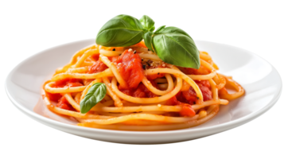

World's Best Spaguetti

Description
¡Ah, el espagueti! Un plato clásico que encarna la simplicidad y la elegancia de la cocina italiana. Imagina un conjunto de fideos largos y delgados, cocidos a la perfección al dente, que se envuelven en una rica salsa de tomate, cargada de sabores robustos de ajo, cebolla, y una mezcla de hierbas frescas como albahaca y orégano. Este tazón de maravilla está coronado con queso parmesano rallado, que añade un toque de salinidad y profundidad. Cada bocado es una explosión de texturas y sabores: la suavidad del espagueti, la riqueza de la salsa, y la ligera mordida del queso. Acompañado de una rebanada de pan crujiente, es una comida que no solo satisface el hambre, sino que también calienta el corazón y el alma
Ingredientes
- Pasta
- Salsa de tomate
- Aceite de oliva
- Cebolla
- Ajo
- Albaca fresca
- Oregano
- Queso parmesano rallado
- Sal
- Pimienta
- Agua
Steps
- Cocer el spaguetti
- Lleva a ebullición una olla grande con agua con sal.
- Añade el espagueti y cocina según las instrucciones del paquete hasta que esté al dente.
- Escurre el spaguetti y reserva
- Preparar la Salsa de Tomate:
- Calienta aceite de oliva en una sartén grande a fuego medio.
- Añade cebolla picada y cocina hasta que esté suave y translúcida.
- Agrega ajo picado y cocina por un minuto adicional.
- Incorpora la salsa de tomate a la sartén y mezcla bien.
- Añade albahaca fresca picada y orégano.
- Salpimenta al gusto.
- Cocina a fuego lento durante unos 10-15 minutos, removiendo ocasionalmente.
- Combinar el Espagueti con la Salsa:
-
Añade el espagueti cocido a la sartén con la salsa de tomate.
-
Mezcla bien para que la pasta se impregne de la salsa.
- Cocina por unos minutos adicionales para que se combinen los sabores.